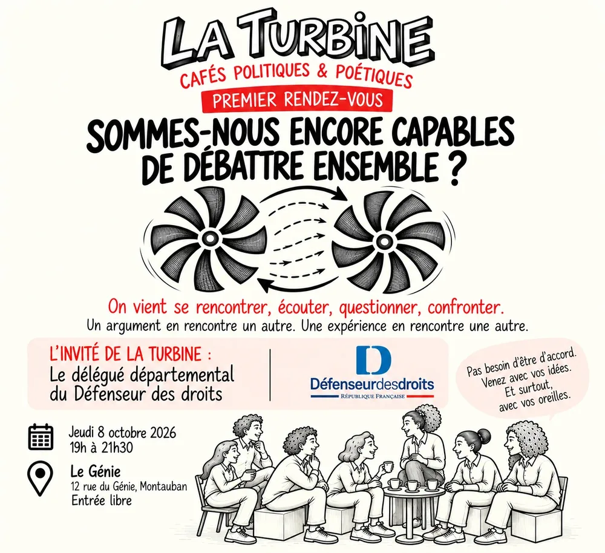

Rejoindre La Turbine
Venir au café suffit. Mais si l’envie vous prend de soutenir l’association, voici les façons de le faire.
1 €
Adhérer
La cotisation est de 1 € par personne et par année civile. Elle se règle en espèces ou par chèque à l’ordre de « La Turbine », sur place lors d’un café.
+
Donner un coup de main
Accueil, buvette, animation, affichage, photos : toute aide compte. Dites-nous ce que vous aimeriez faire.
&
Devenir partenaire
Associations, médias, structures de l’économie sociale et solidaire : relayez les rendez-vous ou co-construisez un café.
Proposer un thème ou un·e invité·e
Une question qui vous travaille ? Une personne qui aurait quelque chose à dire ? Les cafés se construisent aussi avec vous.
Les thèmes évoqués pour la suite : les mobilités, les services publics, l’intelligence artificielle… et ceux que vous apporterez.
Nous écrire, nous suivre
- la.turbine82@gmail.com
- La Turbine, café politique, poétique, citoyenPage Facebook (nouvel onglet)
- @laturbinecafeInstagram (nouvel onglet)
- Le Génie12 rue du Génie, 82000 Montauban
